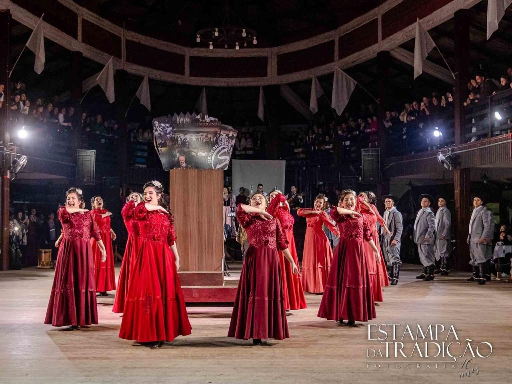
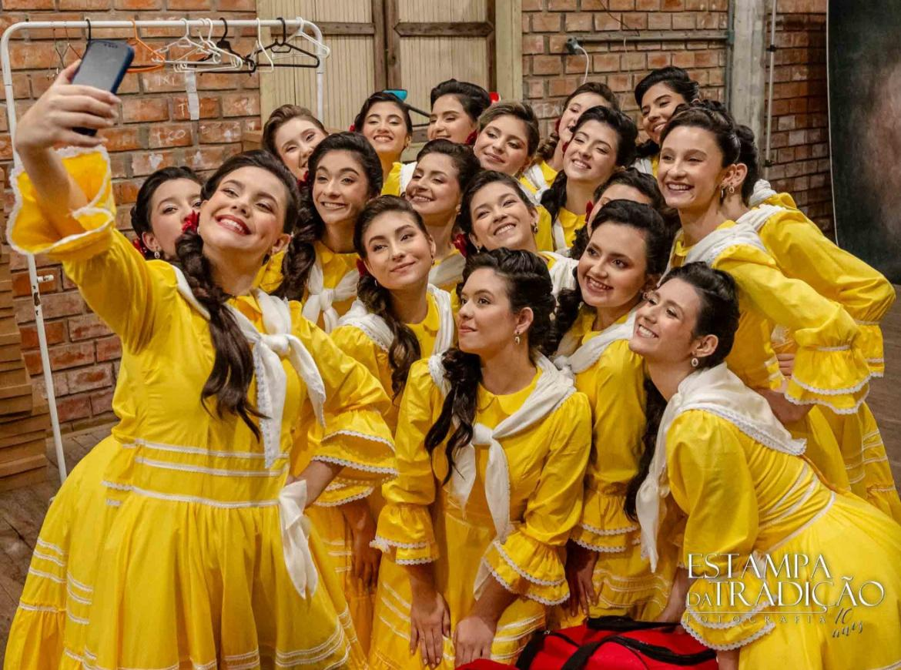
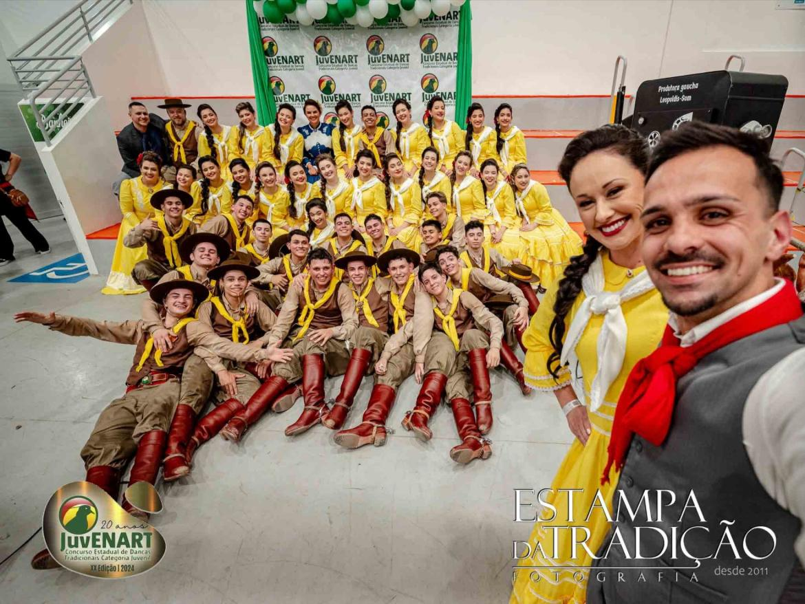
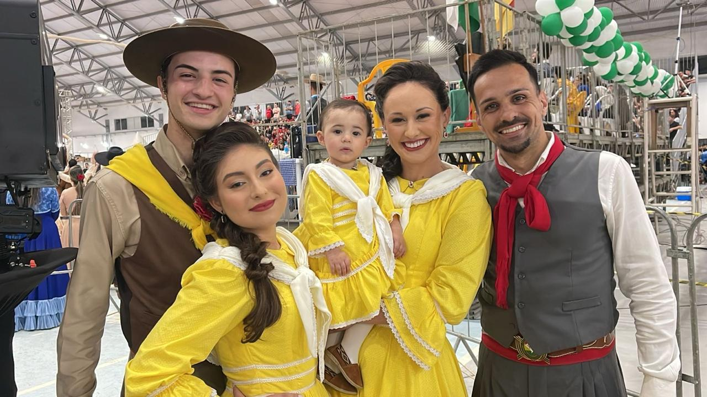

Cachoeirinha, RS · Desde 1981
Nossa história.
Sempre em
movimento.
Tradição, amizade e a alegria de dançar juntos. A invernada juvenil leva essa história no peito.
01 / Nossa essência
Raiz que abraça.
Cultura que pulsa.
Um lugar para chegar e se sentir parte. Onde cada ensaio, cada dança e cada encontro dão um novo capítulo à nossa história.
Na invernada juvenil do CTG Rancho da Saudade, cultivamos o amor pela tradição e as amizades que levamos para a vida.
A casa é sua. A história é nossa.
02 / Nossas vivências
Encontre o seu compasso.
Diferentes formas de viver a mesma paixão. Escolha por onde começar.

TRADIÇÃO EM MOVIMENTO ↗O primeiro passo é se permitir.
A força do sapateado, o movimento da saia e a sintonia de dançar junto. Há sempre um novo passo para aprender.
Venha conhecer a invernada ↗03 / Nossa trajetória
Uma história feita
de encontros.
Uma família que vai além dos tablados, formando jovens no amor pelo tradicionalismo.
Com ensaios regulares e vivências culturais intensas, construímos uma comunidade que acolhe quem chega e acompanha quem vai longe.
São quatro conquistas estaduais que celebram o trabalho e a dedicação de diferentes gerações.
04 / Nossa galeria
Momentos que ficam
na memória.
Um pouco das histórias que vivemos juntos.




05 / Nossa gente
Histórias de quem
faz parte.
“Participar da invernada mudou minha vida. Aprendi sobre cultura, respeito e fiz amizades para sempre.”
“É emocionante ver nossos filhos no palco. O CTG Rancho da Saudade é uma segunda família.”
06 / Bons encontros
Marque na memória.
A próxima boa lembrança começa com um encontro.
Em breve, novidades sobre a programação da invernada.
Fale conosco para saber mais ↗07 / Venha fazer parte
Seu próximo passo
começa aqui.
Tem entre 14 e 17 anos? Conte um pouco sobre você e envie sua mensagem para a coordenação pelo WhatsApp.
Mais que um lugar. Um sentimento.
Tem lugar pra você
nessa história.
Pra dançar, aprender e estar junto.
Encontre seu lugar ↗